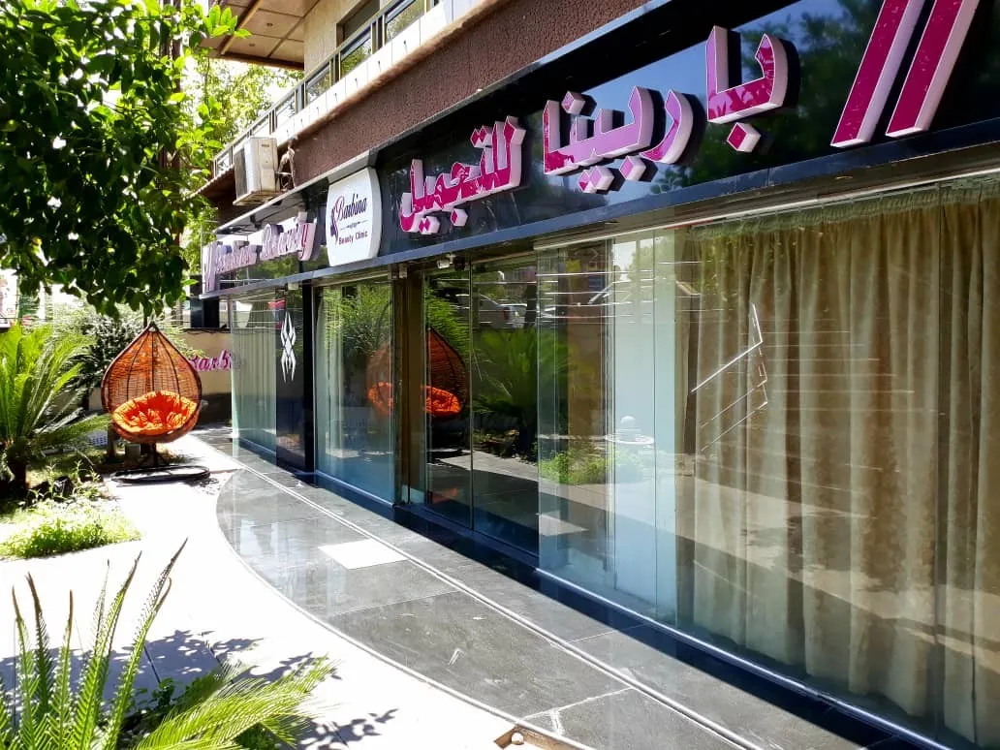
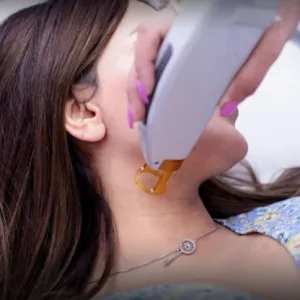
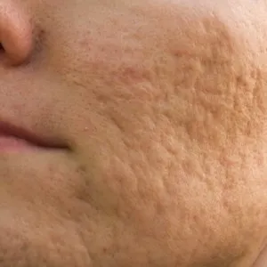
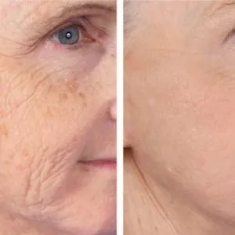
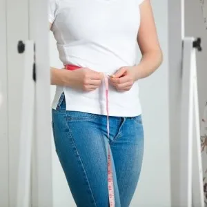
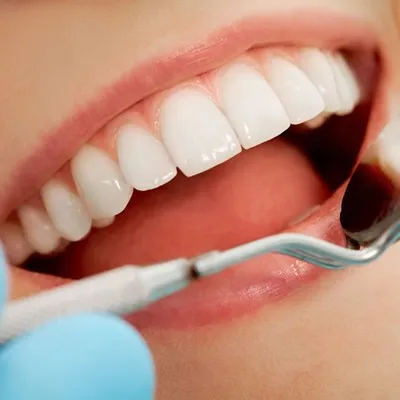
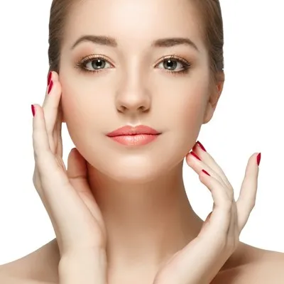

ساحة الميسات · دمشق
مركز باربينا للتجميل في دمشق
عناية طبية تجميلية بلمسة لطيفة: ليزر إزالة الشعر للسيدات، العناية بالبشرة، الحقن التجميلية، تجميل الأسنان والتجميل النسائي — في مكان واحد وتحت إشراف طبي.
- استشارة البشرة مجانية
- مراجعة مجانية خلال 10 أيام
- أسعار واضحة تبدأ من

خدماتنا
خدمات التجميل في مركز باربينا
اختر القسم لمعرفة التفاصيل وعدد الجلسات والسعر الذي يبدأ منه كل إجراء.

ليزر إزالة الشعر
نقدّم في مركز باربينا جلسات إزالة الشعر بالليزر للسيدات بجهاز الكسندرايت Motus AX الإيطالي بتقنية Moveo وجهاز Again من شركة Deka. تحتاج معظم المناطق بين 5 و12 جلسة بفاصل 3 إلى 6 أسابيع، ويختلف السعر حسب المنطقة والجهاز.
يبدأ من 200 ل.سالتفاصيلالبوتوكس
البوتوكس حقن تجميلية غير جراحية تُرخي العضلة المسؤولة عن التجاعيد أو توقف إشارات التعرق مؤقتاً. نستخدمه في مركز باربينا لتجاعيد الوجه وفرط التعرق والابتسامة اللثوية، وتستغرق الجلسة بين 15 و45 دقيقة، ويدوم الأثر عادةً 4–6 أشهر. يبدأ السعر من 3,500 ل.س.
يبدأ من 3,500 ل.سالتفاصيلالفيلر
الفيلر مادة مالئة من حمض الهيالورونيك تُحقن تحت الجلد لملء الشفاه والخدود وإبراز الذقن وعلاج تجاويف تحت العين. تستغرق الجلسة 30–60 دقيقة، وتدوم النتيجة من 4 أشهر حتى سنة ونصف حسب النوع وطبيعة الجسم. يبدأ السعر من 7,000 ل.س للسانتي في فيلر الوجه.
يبدأ من 7,000 ل.سالتفاصيلإبر النضارة
إبر النضارة حقن دقيقة تحت الجلد تمد البشرة بالترطيب والمواد المغذية أو تحفّز إنتاج الكولاجين، فتبدو أكثر إشراقاً ومرونة. نوفر الميزوثيرابي والبلازما وبروفايلو وPDRN ومحفزات الكولاجين والإكسوزوم. تحتاج معظمها بين 2 و6 جلسات، ويبدأ السعر من 1,000 ل.س لجلسة البلازما.
يبدأ من 1,000 ل.سالتفاصيلعلاج تساقط الشعر
نعالج تساقط الشعر وضعفه في مركز باربينا بحقن فروة الرأس بالبلازما الغنية بالصفيحات (PRP) أو بكوكتيلات الميزوثيرابي المغذية، ويمكن دعمهما بالخلايا الجذعية. يحتاج العلاج عادةً بين 4 و8 جلسات حسب التقنية والحالة، وتبدأ جلسة البلازما من 1,000 ل.س وجلسة ميزو الشعر من 2,000 ل.س.
يبدأ من 1,000 ل.سالتفاصيلالعناية بالبشرة
نقدّم في مركز باربينا جلسات تنظيف البشرة الطبي والهيدرافيشل وأنواع التقشير بالأحماض والكريستال والألماس والكربون، ونبدأ عند الحاجة بتحليل البشرة بكاميرا الذكاء الاصطناعي لتحديد نوعها ومشكلاتها. تحتاج البشرة عادةً إلى جلسة تنظيف واحدة شهرياً على الأقل، ويبدأ سعر جلسة تنظيف الزيوان من 750 ل.س.
يبدأ من 500 ل.سالتفاصيل
علاج الندبات والتصبغات
نعالج في مركز باربينا ندبات حب الشباب وآثار الجروح والحروق وتشققات الجلد والتصبغات بإشراف طبيبة جلدية، باستخدام الفراكشنال CO2 والديرمابن مع البلازما أو الميزو والتقشير وليزر التصبغات. يحتاج العلاج عادةً بين 4 و6 جلسات، ويبدأ سعر جلسة الديرمابن من 750 ل.س والفراكشنال للوجه من 2,500 ل.س.
يبدأ من 750 ل.سالتفاصيل
شد الوجه بدون جراحة
يقدّم مركز باربينا في دمشق عدة خيارات لشد الوجه والرقبة بدون جراحة: الهايفو 3D بالموجات فوق الصوتية المركزة، والخيوط التجميلية القابلة للذوبان، وجهاز Jett Plasma لترهل الجفون. يكفي الهايفو عادةً جلسة واحدة كل 6 أشهر، وتبدأ الأسعار من 2,000 ل.س لخيط الكولاجين الواحد.
يبدأ من 2,000 ل.سالتفاصيل
نحت الجسم
يجمع قسم نحت الجسم في مركز باربينا بدمشق بين أجهزة غير جراحية مثل الأوندا الإيطالي والكرايو والكافيتيشن، وإجراءات طفيفة التوغل كالإندوليفت وإبر إذابة الدهون، مع برنامج غذائي بإشراف طبي. يختلف عدد الجلسات حسب التقنية، وتبدأ الأسعار من 500 ل.س لجلسة الكافيتيشن.
يبدأ من 500 ل.سالتفاصيل
تجميل الأسنان
تجمع عيادة الأسنان في مركز باربينا بساحة الميسات في دمشق بين التجميل والعلاج: ابتسامة هوليوود بالزيركون والعدسات، والفينير المتحرك، وتبييض الأسنان المنزلي والليزري، والزراعة، والتقليح، والحشوات وعلاج العصب. تحتاج معظم الإجراءات من زيارة إلى ثلاث زيارات، واستشارة الأسنان مجانية، ويبدأ السعر من 1,500 ل.س لجلسة التقليح والتنظيف.
يبدأ من 1,500 ل.سالتفاصيل
التجميل النسائي
يجمع قسم التجميل النسائي في مركز باربينا بدمشق بين العيادة النسائية والإجراءات التجميلية للمنطقة الحساسة: تضييق المهبل وعلاج سلس البول بقبضة الفراكشنال CO2 النسائية، وتفتيح المناطق الحساسة بالفراكشنال أو الميزوثيرابي. تبدأ المعاينة النسائية من 500 ل.س، وتُجرى الجلسات بخصوصية تامة.
يبدأ من 500 ل.سالتفاصيل
العيادة الجلدية
تستقبل العيادة الجلدية في مركز باربينا بدمشق حالات الأمراض الجلدية المتنوعة عند طبيبة الجلدية د. فاتن درويش، وتقدّم إجراءات مثل إزالة الشامات والزوائد الجلدية، وإزالة الوشم بالليزر، وتركيب الحلق بأدوات معقّمة. يبدأ رسم المعاينة الجلدية من 500 ل.س، وتشمل الإجراءات مراجعة دون رسوم خلال 10 أيام.
يبدأ من 500 ل.سالتفاصيلللسيدات
ليزر إزالة الشعر في دمشق بجهازين إيطاليين
تحتاج معظم المناطق بين 5 و12 جلسة. نختار لكِ الجهاز الأنسب حسب البشرة والمنطقة، ونرافقك بتعليمات واضحة قبل كل جلسة وبعدها.
Motus AX
الكسندرايت 755 نانومتر بتقنية Moveo — جلسة مريحة جداً للمناطق الحساسة.
يبدأ من 200 ل.س
Again · Deka
طاقة تصل إلى 20 جول/سم² في الضربة — سرعة أكبر للمساحات الواسعة.
يبدأ من 300 ل.س
لماذا يختار المراجعون مركز باربينا؟
أجهزة ليزر إيطالية
جهاز الكسندرايت Motus AX بتقنية Moveo وجهاز Again من Deka لإزالة الشعر بأمان وراحة.
إشراف طبي
معاينة جلدية ونسائية داخل المركز قبل الليزر والإجراءات التجميلية عند الحاجة.
مراجعة مجانية
متابعة مجانية خلال 10 أيام بعد الإجراء، ومراجعة فورية في حال أي تحسس بعد الليزر.
كل العناية في مكان واحد
الليزر والبشرة والحقن وتجميل الأسنان والتجميل النسائي في عنوان واحد بدمشق.
كيف تبدأ رحلتك معنا؟
- ١
تواصل معنا
راسلنا على واتساب أو اتصل لتحديد الخدمة والموعد.
- ٢
الاستشارة
تقييم البشرة أو الحالة وشرح عدد الجلسات والسعر الذي يبدأ منه الإجراء.
- ٣
الجلسة
إجراء مريح بأجهزة ومواد معتمدة مع تعليمات واضحة قبل وبعد.
- ٤
المتابعة
مراجعة مجانية خلال 10 أيام للاطمئنان على النتيجة.
من دليل العناية
متى تظهر نتيجة البوتوكس وكم تدوم؟
تبدأ نتيجة البوتوكس بالظهور عادةً خلال 3 إلى 5 أيام من الحقن، وتكتمل بعد نحو أسبوعين، ولهذا تكون المراجعة بعد 10 أيام. ويدوم الأثر في تجاعيد الوجه عادةً بين 4 و6 أشهر، ثم تعود الحركة تدريجياً، وتختلف المدة حسب قوة العضلات والمنطقة والجرعة.
ما الفرق بين البوتوكس والفيلر؟
الفرق الأساسي أن البوتوكس يُرخي العضلات مؤقتاً فيخفف التجاعيد التي تظهر مع الحركة، بينما يملأ الفيلر الفراغات ويعيد الحجم المفقود للشفاه والخدود والخطوط الثابتة. يبدأ أثر البوتوكس خلال 3–5 أيام ويدوم عادةً 4–6 أشهر، أما نتيجة الفيلر ففورية تقريباً وتدوم من 4 أشهر حتى سنة ونصف.
كيف تختار مركز تجميل في دمشق؟ أسئلة مهمة قبل الحجز
يبدأ اختيار مركز تجميل في دمشق بأسئلة واضحة قبل الحجز: من الطبيب الذي سيجري الإجراء وما اختصاصه؟ ما اسم الجهاز والمادة؟ هل توجد استشارة قبل البدء ومتابعة بعده؟ هل الأسعار معلنة بالعملة الجديدة؟ وأين تُقدَّم الشكوى؟ والمركز الأكثر ملاءمة هو الذي يجيب بوضوح ودون وعود مبالغ فيها.
مركز تجميل في دمشق بخدمات طبية متكاملة
يقع مركز باربينا للتجميل في ساحة الميسات بدمشق، ويقدّم خدمات التجميل الطبي غير الجراحي ضمن أقسام متخصصة: ليزر إزالة الشعر في دمشق للسيدات بجهازي Motus AX وAgain، والبوتوكس والفيلر وإبر النضارة والميزوثيرابي، إضافة إلى تنظيف البشرة وتقشيرها وعلاج آثار حب الشباب والتصبغات وشد الوجه بدون جراحة بالهايفو والخيوط.
وفي قسم الجسم نقدّم نحت الجسم بأجهزة الإندوليفت وONDA والكرايو، كما يضم المركز عيادة لتجميل الأسنان تشمل ابتسامة هوليوود والتبييض والزراعة، وقسماً للتجميل النسائي وعيادة جلدية وعلاجات تساقط الشعر.
نعرض لكل خدمة عدد الجلسات المتوقع والتعليمات قبل الإجراء وبعده والسعر الذي يبدأ منه بالليرة السورية الجديدة، لتتمكن من المقارنة واتخاذ القرار بهدوء قبل الحجز. تجد كل ذلك مجمّعاً في صفحة الأسعار وفي دليل العناية.
الأكثر بحثاً في المركز
الأسئلة الشائعة
وين مركز باربينا بدمشق؟
يقع المركز في ساحة الميسات، شارع عقبة بن نافع، الصالحية، دمشق، ويمكنك فتح الاتجاهات مباشرة على خرائط Google من صفحة التواصل.
شو أوقات الدوام بالمركز؟
يستقبل المركز المراجعين يومياً من 8 صباحاً حتى 10 مساءً، ويُفضَّل الحجز المسبق عبر واتساب أو الهاتف.
كيف بحجز موعد؟
أسهل طريقة هي مراسلتنا على واتساب أو الاتصال على الرقم 0933 933 807، وسيساعدك الفريق في اختيار الموعد والخدمة المناسبة.
هل الاستشارة مجانية؟
استشارة البشرة والتنحيف والأسنان والفراكشنال مجانية، أما معاينة التجميل والمعاينة الجلدية والنسائية فتبدأ من 500 ل.س. كما تشمل معظم الإجراءات مراجعة مجانية خلال 10 أيام.
هل ليزر إزالة الشعر للرجال كمان؟
خدمة ليزر إزالة الشعر مخصصة للسيدات فقط، بينما تتوفر خدمات البشرة والحقن والأسنان للجميع.
موقعنا في دمشق
مركز باربينا للتجميل — ساحة الميسات
- ساحة الميسات، شارع عقبة بن نافع، الصالحية، دمشق
- يومياً من 8 صباحاً حتى 10 مساءً
- 011 274 9900 · 0933 933 807
هل لديك سؤال قبل الحجز؟
فريق المركز يجيب عن استفساراتك عبر واتساب ويساعدك في اختيار الموعد المناسب.